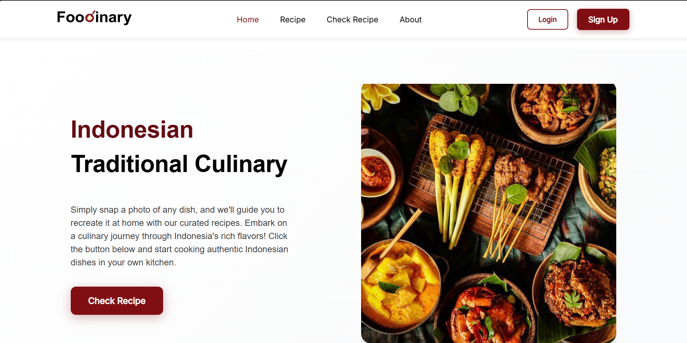
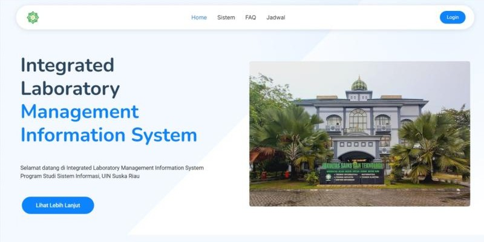
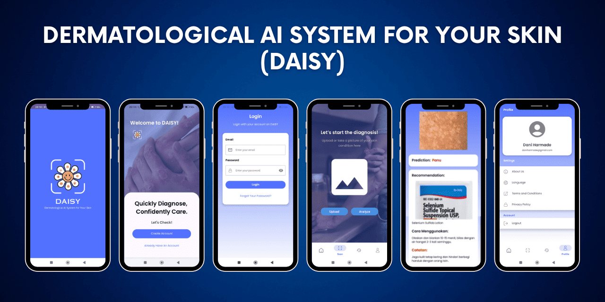

Saya Hafiz Aryan Siregar
Penggemar Teknologi

Tentang
Lulusan Sistem Informasi dengan rekam jejak yang terbukti dalam memimpin proyek pengembangan situs web dan keterlibatan aktif dalam inisiatif organisasi. Terampil dalam kepemimpinan tim, pengembangan web (kerangka kerja PHP & JavaScript), dan solusi komputasi awan. Bersemangat memanfaatkan keahlian teknis untuk mendorong proyek inovatif. Mencari peran sebagai Full Stack Developer, Pengembang Front-End/Back-End, Manajer Proyek, Pemimpin Proyek, atau Insinyur Cloud.
Unduh ResumePengalaman Kerja
PT. Pertamina Patra Niaga Kantor Pusat Jakarta Selatan
Pemimpin Proyek Teknologi Informasi - Magang
Agu 2025 - Sekarang
Laboratorium Komputer Sistem Informasi UIN Suska Riau
Full Stack Developer - Magang Berbasis Proyek
Sep 2024 - Mar 2025
- Mengembangkan ILMIS (Integrated Laboratory Management Information System) sebagai bagian dari skripsi sarjana.
- Mengoptimalkan antarmuka pengguna dan kinerja sistem, menghasilkan waktu muat halaman 30% lebih cepat.
- Merancang dan mengimplementasikan fitur penjadwalan laboratorium yang mengurangi konflik jadwal hingga 90%.
- Mengintegrasikan tiga situs web dan basis data yang berbeda ke dalam sistem terpadu menggunakan basis data terpusat.
- Mengembangkan sistem otentikasi Single Sign-On (SSO) yang mempercepat proses login sebesar 60%.
- Menyebarkan dan menghosting sistem di server resmi universitas.
- Mendokumentasikan seluruh proses pengembangan untuk memfasilitasi pengembang dalam peningkatan di masa depan.
Full Stack Developer - Magang Berbasis Proyek
Mar - Nov 2023
- Mengembangkan sistem untuk pencatatan peralatan, pelacakan pinjaman, dan manajemen pemeliharaan aset.
- Memimpin tim beranggotakan 3 orang dan bertanggung jawab atas studi kelayakan, analisis sistem, dan implementasi.
- Mengembangkan sistem menggunakan CodeIgniter 4, PHP 8, dan MySQL, memastikan kemudahan penggunaan untuk staf laboratorium.
- Merancang basis data untuk mengelola ratusan catatan peralatan, memungkinkan pencarian dan pelacakan aset yang efisien.
- Menyebarkan dan menghosting sistem di server resmi universitas dengan domain uin-suska.ac.id.
Asisten Laboratorium
Sep 2022 - Agu 2023
- Menangani dan mengelola jaringan untuk memastikan konektivitas optimal.
- Bertanggung jawab atas pemeliharaan dan perawatan perangkat keras.
- Mengelola perangkat lunak untuk memastikan selalu diperbarui dan berfungsi dengan baik, termasuk Visual Studio Code, NetBeans, Cisco Packet Tracer, VirtualBox, XAMPP, dan lainnya.
Bootcamp
Coding Camp powered by DBS Foundation
Lulusan Pengembang Full Stack
Jan - Jul 2025
Program pelatihan TI standar tinggi oleh DBS Foundation dan Dicoding untuk mempersiapkan lulusan dengan keterampilan siap kerja sejak 2022.
- Calon terpilih dari 3.000 peserta yang diterima dari total lebih dari 60.000 pelamar.
- Kursus Relevan: Dasar-dasar Pengembangan Perangkat Lunak, Logika Pemrograman, Git & GitHub, JavaScript & Pemrograman Web Dasar, Pengembangan Web Front-End & Back-End, Proyek Akhir, Keterampilan Lunak & Pengembangan Karir.
- Memimpin dan mengelola tim proyek capstone Foodinary.
- Diakui sebagai salah satu dari 5 Pembicara Terbaik di kelas ILT Bahasa Inggris.
Bangkit Academy led by Google, Tokopedia, Gojek, &
Traveloka
Kohort Komputasi Awan
Sep 2024 - Jan 2025
Bangkit adalah program persiapan karir untuk mengembangkan talenta digital terbaik, didukung sepenuhnya oleh Google, GoTo, Traveloka, dan Kementerian Pendidikan Indonesia.
- Kursus Relevan: Jalur Pembelajaran Google Cloud Engineer, DevOps Engineer, Jalur Pembelajaran SRE, Dasar-dasar Komputasi Awan Google, Pembelajaran Mesin Terapan untuk Insinyur Awan, Proyek Capstone / Proyek Akhir, Keterampilan Lunak & Pengembangan Karir.
- Memimpin dan mengelola tim proyek capstone DAISY.
- Diakui sebagai salah satu dari 5 Pembicara Terbaik di kelas ILT Bahasa Inggris.
- Dinobatkan sebagai Pembicara Terbaik selama sesi Ulasan Teman Sebaya.
Pengalaman Proyek
Proyek Foodinary
Pemimpin Proyek dan Pengembang Front-end
Jan - Jun 2025
Foodinary adalah platform berbasis web yang dirancang untuk mempromosikan dan mendidik pengguna tentang kekayaan keragaman masakan tradisional Indonesia. Ini menyediakan informasi komprehensif tentang berbagai hidangan daerah, asal-usul, bahan-bahan, resep, dan profil rasa. Platform ini juga dilengkapi dengan alat pengenalan makanan berbasis Machine Learning yang mengidentifikasi hidangan melalui gambar.
- Mengembangkan situs web bertenaga AI untuk mengidentifikasi masakan tradisional Indonesia dari foto makanan.
- Memimpin tim beranggotakan 5 orang dan menyelesaikan proyek 100% tepat waktu dan sesuai target.
- Menyusun alur kerja proyek menggunakan Notion dan mendelegasikan tugas berdasarkan keahlian teknis masing-masing anggota.
- Memfasilitasi evaluasi rutin dan mengatasi hambatan untuk menjaga kelancaran kemajuan proyek.
- Mengonversi desain UI/UX dari Figma menjadi kode situs web menggunakan HTML, CSS, dan JavaScript murni.
- Mengembangkan tata letak web responsif yang kompatibel dengan berbagai layar perangkat.
- Mengonfigurasi dan mengoptimalkan proses pengembangan menggunakan Webpack untuk mempercepat alur kerja.
Proyek Daisy
Pemimpin Proyek dan Pengembang Back-end
Sep 2024 - Jan 2025
Proyek DAISY adalah proyek yang berfokus pada masalah dermatologis warga negara Indonesia. DAISY adalah singkatan dari Dermatological AI System for Your Skin.
- Mengembangkan aplikasi Android berbasis AI untuk mendeteksi penyakit kulit.
- Memimpin tim beranggotakan 6 orang dan menyelesaikan proyek 100% tepat waktu dan sesuai target.
- Menyusun alur kerja proyek menggunakan Notion dan mendelegasikan tugas berdasarkan keahlian teknis masing-masing anggota.
- Memfasilitasi evaluasi rutin dan mengatasi hambatan untuk menjaga kelancaran kemajuan proyek.
- Merancang dan mengimplementasikan infrastruktur backend menggunakan Node.js dan mengembangkan API otentikasi yang aman.
- Memanage penyebaran sistem menggunakan Firebase dan Google Cloud Run.
Sistem Informasi Inventaris Laboratorium (SITARIS)
Pemimpin Proyek dan Full Stack Developer
Mar - Nov 2023
Sitaris adalah platform yang dikembangkan menggunakan PHP dan kerangka kerja CodeIgniter4, dirancang untuk mengelola dan memantau peralatan dan persediaan laboratorium. Ini dilengkapi dengan pencatatan data, pencarian cepat, peminjaman, pengembalian, pemeliharaan, dan pelaporan, dengan tingkat akses yang terkontrol untuk berbagai peran pengguna. Sistem ini meningkatkan efisiensi dalam manajemen inventaris, memungkinkan staf untuk fokus pada tugas-tugas kritis sambil memberikan wawasan berharga untuk pengambilan keputusan.
- Mengembangkan sistem untuk pencatatan peralatan, pelacakan pinjaman, dan manajemen pemeliharaan aset.
- Memimpin tim beranggotakan 3 orang dan bertanggung jawab atas studi kelayakan, analisis sistem, dan implementasi.
- Mengembangkan sistem menggunakan CodeIgniter 4, PHP 8, dan MySQL, memastikan kemudahan penggunaan untuk staf laboratorium.
- Merancang basis data untuk mengelola ratusan catatan peralatan, memungkinkan pencarian dan pelacakan aset yang efisien.
- Menyebarkan dan menghosting sistem di server resmi universitas dengan domain uin-suska.ac.id.
Pendidikan
Universitas Islam Negeri Sultan Syarif Kasim Riau -
Pekanbaru, Riau
Sistem Informasi | Sarjana Ilmu Komputer
Sep 2021 - Jul 2025 (IPK: 3.86/4.00)
- Kursus Relevan: Organisasi dan Manajemen, Manajemen Proyek TI, Manajemen Layanan TI, Keterampilan Enabling, Keterampilan Interpersonal, Analisis Proses Bisnis, Pemodelan Bisnis, Arsitektur Perusahaan.
- Judul Tesis: Pengembangan Sistem Informasi Manajemen Laboratorium Menggunakan Metode Agile Development.
- Berpartisipasi dalam Program Mobilitas Bersama MATHLINK 2025 dengan Universitas Malaysia Terengganu.
- Berkontribusi pada proyek penelitian berbasis data yang menganalisis korelasi antara durasi belajar dan kinerja ujian.
- Menghadiri sesi Keterampilan Enabling untuk meningkatkan keterampilan kolaborasi, komunikasi, dan kepemimpinan.
SMA Negeri 1 Barumun - Sibuhuan, Sumatera Utara
Matematika Ilmu Pengetahuan Alam
2018 - 2021 (IPK: 96.18/100)
- Runner Up untuk Duta Bahasa Pelajar Sumatera Utara 2019
- Terpilih sebagai Ketua Umum Majelis Permusyawaratan Kelas, mengawasi inisiatif dan diskusi siswa (2019–2020)
- Mendapatkan gelar "Siswa Pria Terbaik" Smansa Barumun 2019
- Penutur Terbaik 2019 Smansa Barumun Kompetisi Debat Bahasa Indonesia
Organisasi
Google Developer Student Clubs UIN Sultan Syarif Kasim Riau
Staf Divisi Pengembang dan Pembicara
Okt 2023 - Okt 2024
- Berkontribusi pada komunitas resmi yang didukung Google yang mempromosikan pembelajaran, kolaborasi, dan pengembangan proyek inovatif menggunakan teknologi Google.
- Mengembangkan dan mengoordinasikan kurikulum pembelajaran sepanjang program.
- Menyelenggarakan lebih dari 5 acara yang berfokus pada pembelajaran mesin, pengembangan aplikasi seluler, komputasi awan, dan pengembangan web.
Himpunan Mahasiswa Program Studi Sistem Informasi
Kepala Divisi Pendidikan, Penelitian, dan Teknologi
Jan 2023 - Des 2023
- Memimpin sebuah divisi dalam merencanakan dan melaksanakan program pengembangan akademik dan teknologi untuk mahasiswa.
- Mengelola konten pendidikan di platform media sosial, termasuk inisiatif mingguan seperti "Kamis Kuis".
- Berkolaborasi dengan Google Developer Student Clubs untuk menyelenggarakan webinar "Bangkit Bersama Sistem Informasi".
Information System Networking Club
Divisi Penelitian dan Publikasi
Jan 2023 - Des 2023
- Memperdalam pengetahuan dalam jaringan komputer, pengembangan web, dan aplikasi melalui kegiatan klub dan penelitian.
- Berpartisipasi dalam penelitian dan publikasi tentang sistem informasi dan jaringan.
- Memberikan bantuan dalam mewawancarai calon anggota organisasi.
Panitia
Kemah Bakti Mahasiswa 2024
Staf Dokumentasi
Mei 2024
Kemah Bakti Mahasiswa adalah program pengabdian masyarakat yang bertujuan untuk memberikan bantuan kepada masyarakat dalam bentuk pembangunan sosial, ekonomi, dan lingkungan.
- Mendokumentasikan acara melalui fotografi dan videografi, menangkap momen dan kegiatan kunci.
- Mengelola dan mengedit konten media, memastikan keluaran berkualitas tinggi untuk keperluan promosi dan arsip.
- Berkolaborasi dengan tim media untuk memastikan konsistensi merek dan pesan di semua platform.
Forum Ta'aruf Sistem Informasi (FORTASI)
Ketua Pelaksana
Sep - Okt 2022
FORTASI adalah program orientasi yang membantu mahasiswa baru beradaptasi dengan kehidupan kampus dengan menghubungkan mereka dengan dosen, mahasiswa senior, dan alumni.
- Memimpin program dengan mengoordinasikan lebih dari 50 anggota panitia di 5 divisi yang berbeda.
- Memimpin koordinasi tim dan proses pengambilan keputusan dari tahap perencanaan hingga pelaksanaan.
- Menyelesaikan acara dari awal hingga akhir, melibatkan lebih dari 70 peserta mahasiswa baru.
Forum Ta'aruf Fakultas Sains and Teknologi (FORTA FASTE)
Staf Mentor
Sep - Okt 2022
FORTA FASTE adalah program orientasi yang membantu mahasiswa baru beradaptasi dengan kehidupan kampus dengan menghubungkan mereka dengan dosen, mahasiswa senior, dan alumni.
- Membimbing mahasiswa baru dalam adaptasi mereka terhadap kehidupan kampus.
- Memberikan informasi komprehensif tentang program akademik dan sumber daya kampus.
- Meningkatkan pemahaman mahasiswa tentang lanskap akademik.
Relawan
Kuliah Kerja Nyata 2024
Ketua Panitia dan Koordinator Dokumentasi
Jul - Sep 2024
KKN (Kuliah Kerja Nyata) adalah program pengabdian masyarakat di mana mahasiswa universitas menerapkan pengetahuan mereka untuk membantu mengembangkan masyarakat lokal.
- Memimpin pelaksanaan lomba "Lomba Anak Sholeh Beraksi" sebagai bagian dari program pengabdian masyarakat (KKN).
- Mengelola tim untuk memastikan kelancaran operasional, koordinasi peserta, dan logistik acara.
- Mendokumentasikan kegiatan melalui fotografi dan videografi serta membuat konten Instagram harian yang menarik.
- Meningkatkan pengikut @menyala.kampungtengah sebanyak 300+ melalui pembuatan konten yang strategis dan konsisten.
Humanizing ICT Exchange Programme
Duta Mahasiswa Internasional
Nov - Des 2023
ICT Exchange Programme adalah pertukaran akademik selama 3 hari antara mahasiswa Indonesia dan Malaysia, yang menampilkan seminar tentang digitalisasi, tur kampus, sesi berbagi, dan pengenalan budaya.
- Mewakili universitas dalam program kolaborasi internasional yang memfasilitasi seminar digitalisasi, tur kampus, dan pertukaran budaya dengan mahasiswa dari IIUM Malaysia.
- Memperkenalkan fasilitas universitas seperti ruang kelas, laboratorium komputer, dan produk institusi UIN Sultan Syarif Kasim Riau.
- Berpartisipasi dalam pengembangan masyarakat dengan menyelenggarakan seminar tentang penerapan sistem informasi desa di Teluk Jering, Kabupaten Kampar, yang berfokus pada digitalisasi administrasi dokumen kantor.
- Mengelola sesi berbagi yang membahas kehidupan kampus, teknologi, dan pengembangan karir.
Seminar Kewirausahaan
Staf Logistik
Nov – Des 2022
Seminar Kewirausahaan adalah acara berskala besar yang diadakan bekerja sama dengan fakultas terkait kewirausahaan, menarik lebih dari 400 peserta.
- Berhasil menyelenggarakan seminar Kewirausahaan berskala besar dengan lebih dari 400 peserta.
- Mengkoordinasikan pengaturan logistik untuk memastikan pelaksanaan seminar yang lancar.
- Mengelola sumber daya secara efektif, memastikan semua peralatan dan materi tersedia dan siap digunakan.
Proyek Terbaru
Berikut adalah beberapa proyek yang telah saya kerjakan belakangan ini. Silakan cek dan lihat.
-

Foodinary (Proyek Terbaru)
Foodinary adalah platform berbasis web yang dirancang untuk mempromosikan dan mendidik pengguna tentang kekayaan keragaman masakan tradisional Indonesia.
Status: SelesaiDurasi: Mar - Juni 2025Peran: Pemimpin Proyek dan Pengembang Front-endWebpack HTML CSS JavaScript Hapi.js Hugging Face Render
-

ILMIS (Proyek Akhir)
Integrated Laboratory Management Information System adalah sistem manajemen laboratorium berbasis PHP yang ditingkatkan yang berevolusi dari SITARIS.
Status: SelesaiDurasi: Sep 2024 - Mar 2025Peran: Pemimpin ProyekCodeIgniter 4 PHP MySQL Bootstrap jQuery TcPdf Jwt Token Laravel Lumen HTML JavaScript CSS Ajax
-

Daisy
Dermatological AI System For Your Skin adalah proyek yang berfokus pada masalah dermatologis warga negara Indonesia. DAISY adalah singkatan dari Dermatological AI System for Your Skin.
Status: SelesaiDurasi: Sep 2024 - Jan 2025Peran: Pemimpin ProyekKotlin Google Cloud Run Node.js Firebase App Engine Firestore Docker
Sertifikat Saya
Berikut adalah beberapa sertifikat yang telah saya peroleh melalui perjalanan belajar dan pengembangan profesional saya.


Publikasi
Makalah penelitian dan artikel yang telah saya terbitkan di jurnal dan konferensi akademik.
Pengembangan Sistem Informasi Manajemen Laboratorium Menggunakan Metode Agile Development
Universitas Islam Negeri Sultan Syarif Kasim Riau
14 Mei, 2025
Comparison of Classification Algorithm Performance for Diabetes Prediction Using Orange Data Mining
Indonesian Journal of Data and Science
31 Desember 2023
Penghargaan dan Pengakuan
Pengakuan dan pencapaian sepanjang perjalanan akademik dan profesional saya.
Beasiswa Mahasiswa Berprestasi PTPN IV Regional III 2024
Diberikan oleh PTPN IV Regional III Riau
November 2024
Runner Up for North Sumatra Student Language Ambassador
Diberikan oleh Balai Bahasa Sumatera Utara
Juli 2020
Best Male Student Award SMANSA Barumun
Diberikan oleh SMA Negeri 1 Barumun
November 2019
Best Speaker Lomba Debat Bahasa Indonesia
Diberikan oleh SMA Negeri 1 Barumun
November 2019
Galeri Saya
Ini adalah galeri yang menampilkan aktivitas terbaru saya. Silakan jelajahi dan lihat-lihat!


Hubungi Saya
Silakan kirim pesan kepada saya tentang web, teknologi, atau hal lainnya.